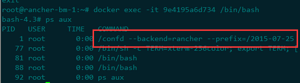

我们在使用rancher时会发现catalog里面提供了很多常用的中间件，诸如Galera和Mongodb等还在rancher下实现了水平扩展，水平扩展意味着随着container数量的增减能够动态修改服务配置，这里面其实就用到了confd和rancher-metadata，当然也同样离不开基础的rancher-dns服务。
在Docker生态圈中有一个神奇的组合就是Haproxy+etcd+confd+Docker即”HECD”神奇四侠，整合了多种开源组件，看似松散的结构，事实上已经是一个有机的整体，它们互相联系、互相作用，是Docker生态圈中最理想的组合之一。它的优势不言而喻，自动、实时发现及无感知服务刷新，支持负载均衡、故障迁移，具备资源弹性，伸缩自如。
这里面confd是负责将etcd中存储的配置获取出来，并在各个服务节点上刷新配置，重载服务。而在rancher体系中并没有etcd，它用rancher-metadata服务来代替了etcd，rancher fork了confd项目，并在backends中加入了rancher-metadata。
重新编译的confd组件会加入到诸如rancher/galera-conf的镜像中，galera-conf对应的container是Sidekick-container，它会负责刷新配置，你会看到它所起的服务类似这样:
Confd的配置有两种，一种为Confd资源配置文件，默认路径为“/etc/confd/conf.d”目录，另一种为配置模板文件，默认路径为“/etc/confd/templates”。
其中“src”为指定模板文件名称（默认到路径/etc/confd/templates中查找）；“dest”指定生成的Haproxy配置文件路径；“keys”指定关联Etcd中key的URI列表；“reload_cmd”指定服务重载的命令。以galera-conf的配置为例:
#/etc/confd/conf.d/galera.toml
[template]
src="galera.cnf.tmpl"
dest="/etc/mysql/conf.d/001-galera.cnf"
keys = [
"/self"
]
#/etc/confd/templates/galera.cnf.tmpl
[mysqld]
server-id = {{getv "/self/container/create_index"}}
log-bin = /var/log/mysql/mariadb-bin.index
bind-address = {{getv "/self/container/primary_ip"}}
max_connections = 1000
report_host = {{getv "/self/container/name"}}
wsrep_node_name = {{getv "/self/container/name"}}
wsrep_cluster_name="{{getv "/self/stack/name"}}"
# User supplied configs
{{if exists "/self/service/metadata/mysqld"}}
{{getv "/self/service/metadata/mysqld"}}
{{end}}
我们可以通过curl来模拟confd-getv的取值结果，比如:
$ curl http://rancher-metadata/latest/self/container/primary_ip
10.42.106.51
$ curl http://rancher-metadata/latest/self/service/metadata/mysqld
innodb_file_per_table = 1
innodb_autoinc_lock_mode=2
query_cache_size=0
query_cache_type=0
innodb_flush_log_at_trx_commit=0
binlog_format=ROW
default-storage-engine=innodb
wsrep_provider=/usr/lib/galera/libgalera_smm.so
wsrep_provider_options="gcache.size = 2G"
wsrep_sst_method=mysqldump
wsrep_sst_auth=root:123456
progress=1
而这些metadata是如何配置进去的呢？目前提供的方式就是写在rancher-compose的文件中，比如galera的:
galera:
scale: 3
metadata:
mysqld: |
innodb_file_per_table = 1
innodb_autoinc_lock_mode=2
query_cache_size=0
query_cache_type=0
innodb_flush_log_at_trx_commit=0
binlog_format=ROW
default-storage-engine=innodb
wsrep_provider=/usr/lib/galera/libgalera_smm.so
wsrep_provider_options="gcache.size = 2G"
wsrep_sst_method=mysqldump
wsrep_sst_auth=root:${mysql_root_password}
progress=1
能够很明显的感觉到，rancher准备会开始一些闭源的项目，在docker-hub上貌似没有找到rancher集成confd组件的基本镜像，后续rancher应该会提供更多的catalog，猜测很多使用高级特性的应用应该会采取闭源措施。
目前的一些catalog镜像的dockerfile的开源地址是 https://github.com/rancher/compose-templates